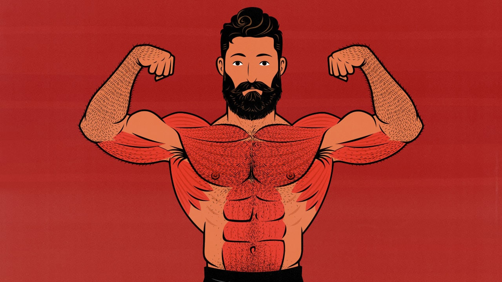

Chest-focused Workout Flow

Chasing that immaculate chest pump? All you need for a guaranteed fulfilling chest-day are:
- Flat-barbell bench press
- Incline seated cable-flyes
- Deficit push-ups
Workout-flow
- Start your workout by warming up your shoulders and chest; a resistance band is an excellent accessory to getting the muscle fibers primed through pre-activation reps!
- Begin your working sets with the heaviest and most technical lift of the three: the barbell bench press. Focus on completing the range of motion using an appropriate weight that is challenging enough to be performed with good form.
- Once you're done, proceed to the cable machines and set up a seat with an incline. The degree of inclination will vary, but as a general rule, somewhere between 30-45 degrees of incline works best to shift the load from your primarily your shoulders to your chest.
- The last exercise to be performed for this workout are deficit push-ups. These are best set-up with blocks/weight plates on the ground at a height that allows a decent degree of stretch for your chest at the bottom of the movement.
Now go feel your chest ripping through your shirt!